MATHS :: Lecture 14 :: Model

Definition
Model
A mathematical model is a representation of a phenomena by means of mathematical equations. If the phenomena is growth, the corresponding model is called a growth model. Here we are going to study the following 3 models.
1. linear model
2. Exponential model
3. Power model
1. Linear model
The general form of a linear model is y = a+bx. Here both the variables x and y are of degree 1.
To fit a linear model of the form y=a+bx to the given data.
Here a and b are the parameters (or) constants of the model. Let (x1 , y1) (x2 , y2)…………. (xn , yn) be n pairs of observations. By plotting these points on an ordinary graph sheet, we get a collection of dots which is called a scatter diagram.
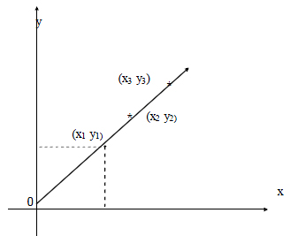
There are two types of linear models
(i) y = a+bx (with constant term)
(ii) y = bx (without constant term)
The graphs of the above models are given below :
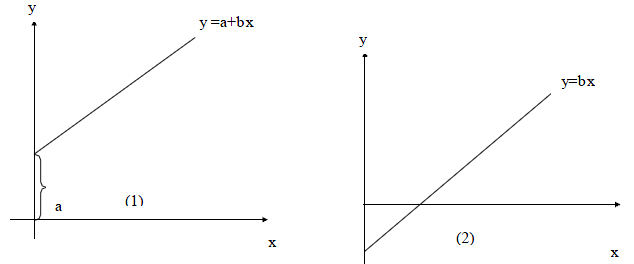
‘a’ stands for the constant term which is the intercept made by the line on the y axis. When x =0, y =a ie ‘a’ is the intercept, ‘b’ stands for the slope of the line .
Eg:1. The table below gives the DMP(kgs) of a particular crop taken at different stages;
fit a linear growth model of the form w=a+bt, and find the value of a and b from the graph.
t (in days) ; |
0 |
5 |
10 |
20 |
25 |
DMP w: (kg/ha) |
2 |
5 |
8 |
14 |
17 |
2. Exponential model
This model is of the form y = aebx where a and b are constants to be determined
The graph of an exponential model is given below.
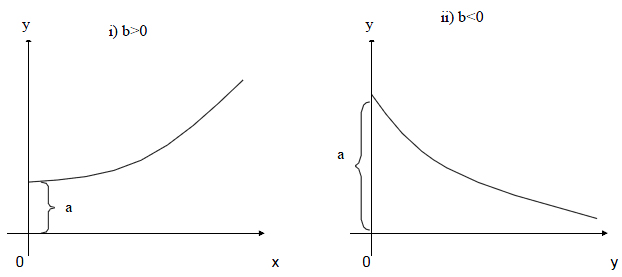
‘a’ stands for the constant term which is the intercept made by the line on the y axis. When x =0, y =a ie ‘a’ is the intercept, ‘b’ stands for the slope of the line .
Eg:1. The table below gives the DMP(kgs) of a particular crop taken at different stages;
fit a linear growth model of the form w=a+bt, and find the value of a and b from the graph.
t (in days) ; |
0 |
5 |
10 |
20 |
25 |
DMP w: (kg/ha) |
2 |
5 |
8 |
14 |
17 |
2. Exponential model
This model is of the form y = aebx where a and b are constants to be determined
The graph of an exponential model is given below.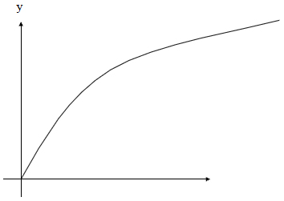
o x
Example: Fit the power function for the following data
x |
0 |
1 |
2 |
3 |
y |
0 |
2 |
16 |
54 |
Crop Response models
The most commonly used crop response models are
- Quadratic model
- Square root model
Quadratic model
The general form of quadratic model is y = a + b x + c x2
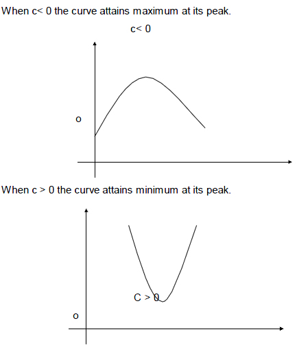The parabolic curve bends very sharply at the maximum or minimum points.
Example
Draw a curve of the form y = a + b x + c x2 using the following values of x and y
x |
0 |
1 |
2 |
4 |
5 |
6 |
y |
3 |
4 |
3 |
-5 |
-12 |
-21 |
Square root model
The standard form of the square root model is y = a +b+ cx
When c is negative the curve attains maximum
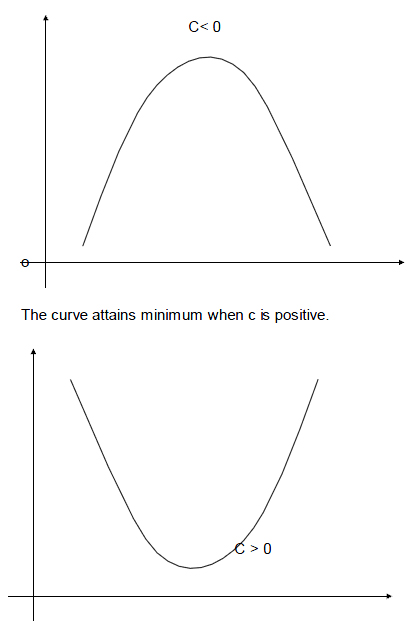
At the extreme points the curve bends at slower rate
Three dimensional Analytical geometry
Let OX ,OY & OZ be mutually perpendicular straight lines meeting at a point O. The extension of these lines OX1, OY1 and OZ1 divide the space at O into octants(eight). Here mutually perpendicular lines are called X, Y and Z co-ordinates axes and O is the origin. The point P (x, y, z) lies in space where x, y and z are called x, y and z coordinates respectively.
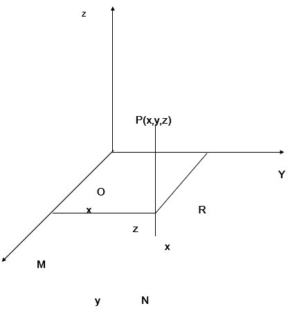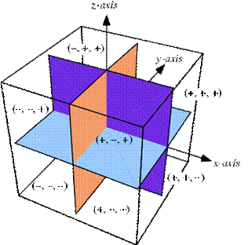
Distance between two points
The distance between two points A(x1,y1,z1) and B(x2,y2,z2) is
dist AB = 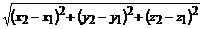
In particular the distance between the origin O (0,0,0) and a point P(x,y,z) is
OP =
The internal and External section
Suppose P(x1,y1,z1) and Q(x2,y2,z2) are two points in three dimensions.
P(x1,y1,z1) A(x, y, z) Q(x2,y2,z2)
The point A(x, y, z) that divides distance PQ internally in the ratio m1:m2 is given by
A = 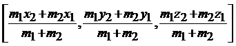 |
Similarly
P(x1,y1,z1) and Q(x2,y2,z2) are two points in three dimensions.
P(x1,y1,z1) Q(x2,y2,z2) A(x, y, z)
The point A(x, y, z) that divides distance PQ externally in the ratio m1:m2 is given by
A = 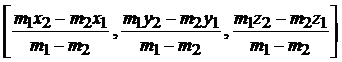 |
If A(x, y, z) is the midpoint then the ratio is 1:1
A = 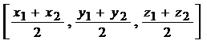 |
Problem
Find the distance between the points P(1,2-1) & Q(3,2,1)
PQ= ===2
Direction Cosines
Let P(x, y, z) be any point and OP = r. Let a,b,g be the angle made by line OP with OX, OY & OZ. Then a,b,g are called the direction angles of the line OP. cos a, cos b, cos g are called the direction cosines (or dc’s) of the line OP and are denoted by the symbols I, m ,n.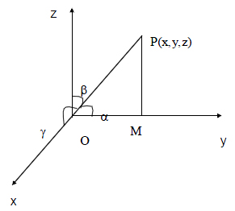
Result
By projecting OP on OY, PM is perpendicular to y axis and the also OM = y
Similarly,
(i.e) l = m = n =
\l2 + m2 + n2 = 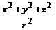
(Distance from the origin)
\ l2 + m2 + n2 = 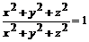
l2 + m2 + n2 = 1
(or) cos2a + cos2b + cos2g = 1.
Note
The direction cosines of the x axis are (1,0,0)
The direction cosines of the y axis are (0,1,0)
The direction cosines of the z axis are (0,0,1)
Direction ratios
Any quantities, which are proportional to the direction cosines of a line, are called direction ratios of that line. Direction ratios are denoted by a, b, c.
If l, m, n are direction cosines an a, b, c are direction ratios then
a µ l, b µ m, c µ n
(ie) a = kl, b = km, c = kn
(ie) (Constant)
(or) 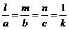(Constant)
To find direction cosines if direction ratios are given
If a, b, c are the direction ratios then direction cosines are
l =
similarly m = (1)
n =
l2+m2+n2 = 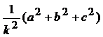
(ie) 1 = 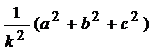
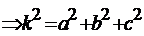
Taking square root on both sides
K =
\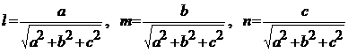
Problem
1. Find the direction cosines of the line joining the point (2,3,6) & the origin.
Solution
By the distance formula
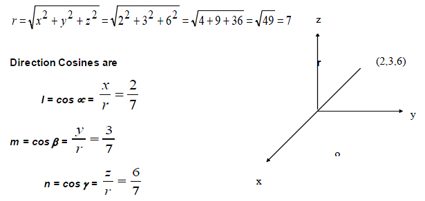
2. Direction ratios of a line are 3,4,12. Find direction cosines
Solution
Direction ratios are 3,4,12
(ie) a = 3, b = 4, c = 12
Direction cosines are
l = 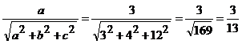
m= 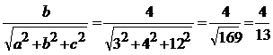
n= 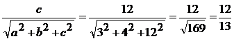
Note
- The direction ratios of the line joining the two points A(x1, y1, z1) &
B (x2, y2, z2) are (x2 – x1, y2 – y1, z2 – z1) - The direction cosines of the line joining two points A (x1, y1, z1) &
B (x2, y2, z2) are
| Download this lecture as PDF here |